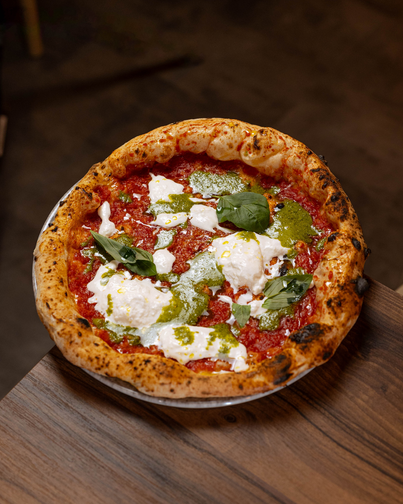
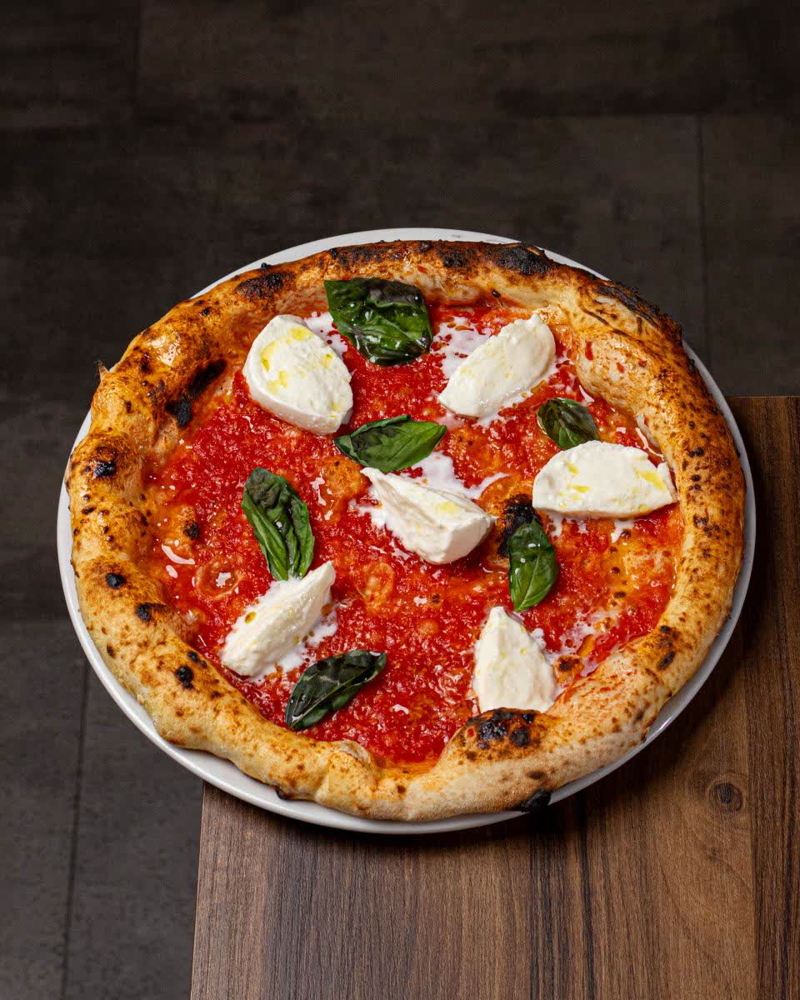
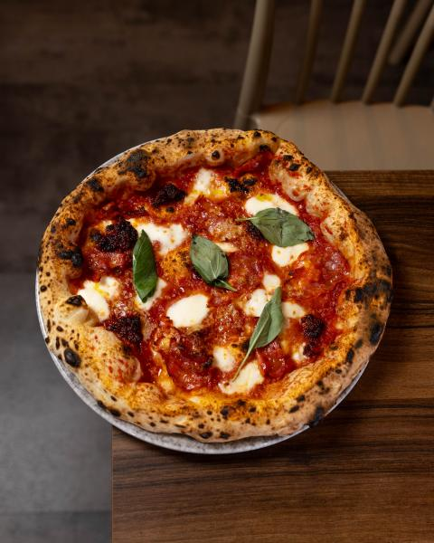
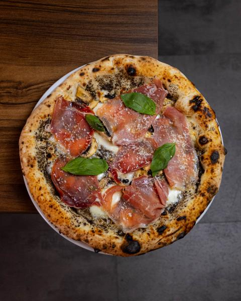
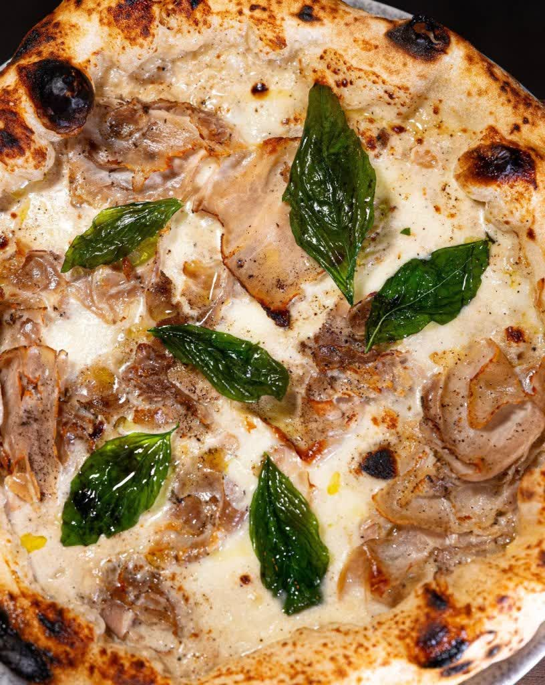
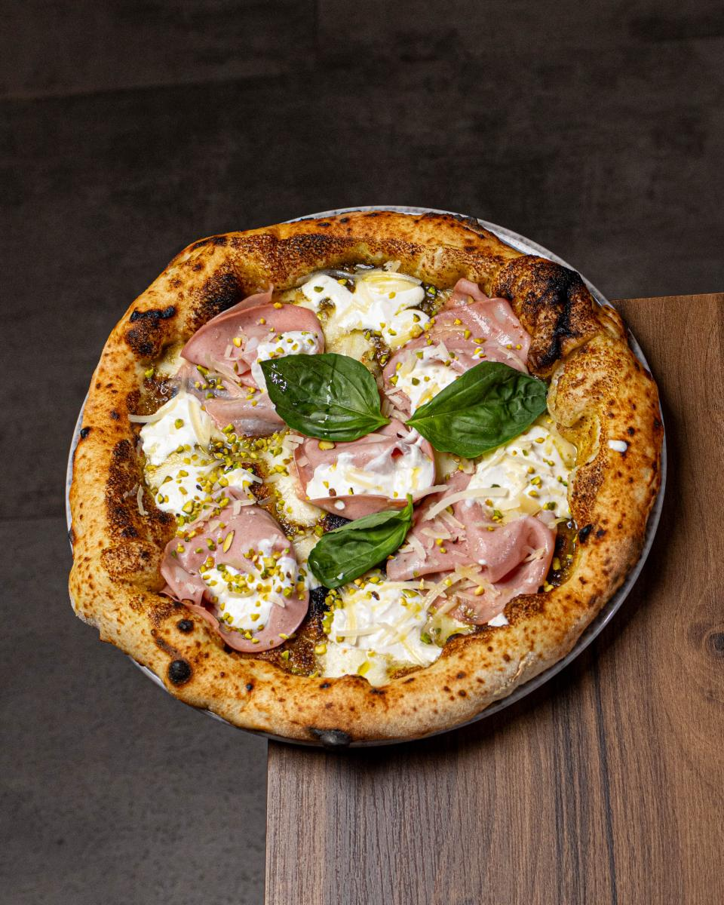
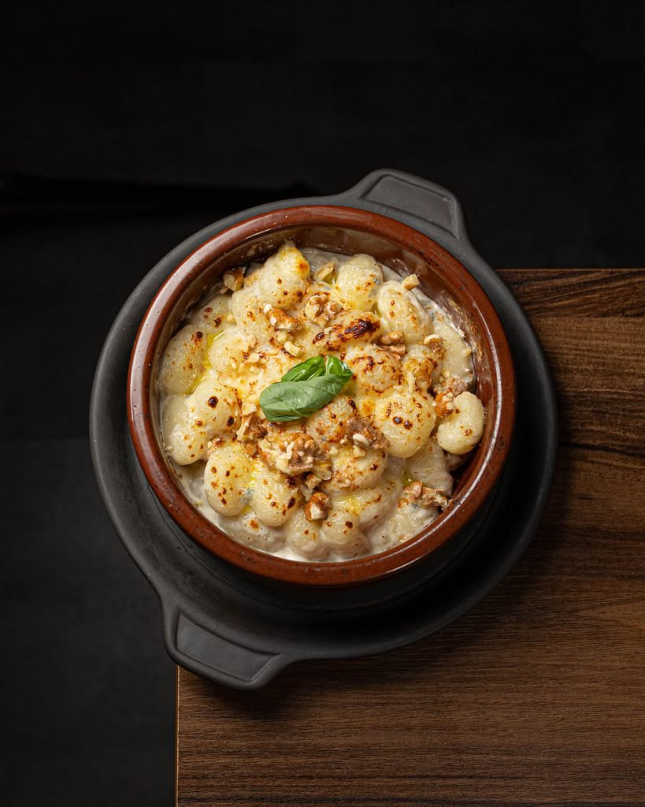
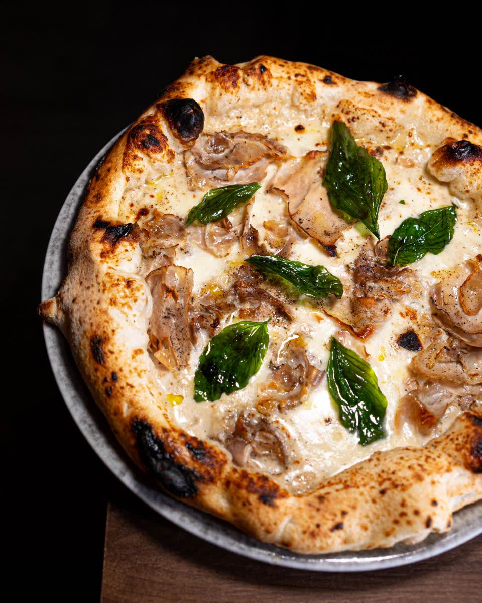

Oi Vita
Tomate, pesto de albahaca, stracciatella, parmesano, pecorino y aceite de oliva. La pizza que da nombre a la casa.
Ver carta · 15,5 €
En el corazón del Barrio del Carmen. Masa de larga fermentación, horno a alta temperatura e ingredientes italianos seleccionados. Pizza, brunch de fin de semana y cócteles en un ambiente acogedor.
Oi Vita es una auténtica pizzería napolitana donde tradición y sabor se unen en cada plato. Ubicada en pleno Barrio del Carmen, elaboramos pizzas artesanales con ingredientes frescos y masa fermentada al estilo italiano. Un ambiente multicultural y acogedor para vivir la verdadera experiencia napolitana, en el local o para llevar.
Nuestra masa fermenta al estilo napolitano para conseguir una textura ligera, un borde aireado y un punto perfecto de horneado, fiel a la tradición de Nápoles.
Mozzarella fior di latte, stracciatella, mortadella, trufa, nduja calabresa y aceite de oliva virgen extra. Producto seleccionado para un sabor auténtico.
Horneamos cada pizza a alta temperatura para lograr el borde justo y el punto exacto de la auténtica pizza napoletana, recién hecha al momento.
Completa la experiencia con nuestro brunch de fin de semana y una carta de drinks. Cucina italiana y buen ambiente, también para celebrar.
Pizza napolitana auténtica, masa ligera y borde perfecto, ingredientes frescos y sabores equilibrados. Servicio muy atento y ambiente acogedor.
Desde la pureza de una base de tomate San Marzano hasta elaboraciones con trufa, mortadella y pistacho. Estas son algunas de las favoritas de la casa.
Tomate, pesto de albahaca, stracciatella, parmesano, pecorino y aceite de oliva. La pizza que da nombre a la casa.
Ver carta · 15,5 €Crema de cacio e pepe, fior di latte, porchetta, albahaca frita y aceite de oliva virgen. Un homenaje a la cocina romana.
Ver carta · 22 €Trufa, fior di latte, champiñones, parmesano, pecorino, jamón serrano y albahaca. Aroma e intensidad para los amantes de la trufa.
Ver carta · 20,5 €Fior di latte, mortadella, pesto de pistacho, gragea de pistacho, stracciatella, pecorino y parmesano.
Ver carta · 21 €Tomate, fior di latte, nduja picante, spianata picante, miel, parmesano y pecorino. El equilibrio entre el picante y la miel.
Ver carta · 15,5 €Tomate, mozzarella di bufala, parmesano, pecorino, albahaca y aceite de oliva. El clásico napolitano en su versión más pura.
Ver carta · 16,5 €Las pizzas, los platos y la experiencia que viven cada día nuestros comensales en el Barrio del Carmen.

Tradición napoletana
Diavola
Tartufo
Recién salida del horno
Pistacchio e Mortadella
Antipasti
BiancaMaravillosa experiencia: pizza napolitana auténtica, masa ligera y borde perfecto, ingredientes frescos y sabores equilibrados. Cócteles creativos y excelente relación calidad-precio.
La comida buenísima: las pizzas, un 10, y la pasta que acaban de añadir a la carta está súper rica. Rocío, la camarera que nos atendió, y todos los demás, geniales.
Teníamos una reserva a las 21:00 y nos sentaron enseguida. Pedimos solo dos pizzas pero, además de estar buenísimas, todo el trato fue inmejorable.
Fuimos a probarlo y volveremos 100%. Pedimos los arancini de entrante y estaban tan buenos que repetimos. Reservar es buena idea porque se llena.
La pizza, muy buena. El ambiente en el local y en la terraza, muy agradable. La próxima vez nos quedamos a cenar sin duda.
Local en el Barrio del Carmen, no muy grande pero acogedor, muy buen servicio y rápido, comida de calidad y deliciosa, pizzas napolitanas y postres caseros. Recomendable.
Estamos en pleno Barrio del Carmen de Valencia. Reserva tu mesa, llámanos o escríbenos por WhatsApp.
Recomendamos reservar, sobre todo los fines de semana, porque el local es acogedor y suele completarse. Puedes reservar desde nuestra web, por teléfono al 963 31 65 05 o por WhatsApp.
Sí. Puedes pedir online y recoger en el local o recibirlo a domicilio a través de nuestra carta de pedidos.
Una masa de larga fermentación al estilo napolitano, horneada a alta temperatura, e ingredientes italianos seleccionados como la mozzarella fior di latte, la mortadella, la trufa o la nduja calabresa.
Sí, ofrecemos brunch los viernes, sábados y domingos de 10:00 a 13:00, además del servicio de cena.
Estamos en Carrer de la Conquesta, 8, 46001 València, en pleno Barrio del Carmen. Tienes el mapa y las indicaciones en la página de Contacto.
De lunes a jueves abrimos para cena de 19:00 a 23:00. Viernes y sábado: brunch de 10:00 a 13:00 y cena de 19:00 a 23:30. Domingo: brunch de 10:00 a 13:00 y cena de 19:00 a 23:00.